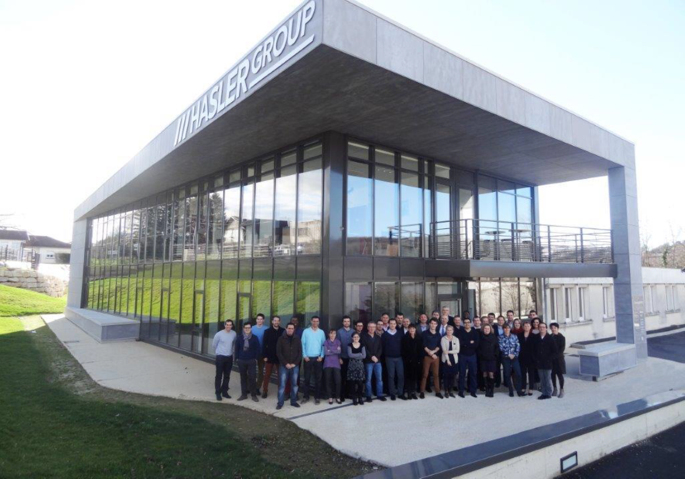

Présentation du Groupe
Le groupe HASLER implanté mondialement, est l’un des leaders de l’ingénierie de dosage et de pesage industriel. Il met en œuvre son expertise dans la conception, l’intégration et la commercialisation de solutions de dosage gravimétrique pour produits vrac.
HASLER group regroupe désormais plusieurs entreprises, dans différents domaines d’activités
HASLER International, spécialisé dans le développement et la vente de doseurs industriels. HASLER propose différentes versions adaptées au type et/ou à la quantité de matière à transporter. Ils proposent une gamme de produit qui reste adaptable (la longueur des tapis de dosage adaptable en fonction des matériaux etc...).
Trois grands types de dosage:
- Doseurs à bande
- Doseurs rotatifs
- Doseurs gravimétriques
Différents capteurs de poids et de vitesse sont positionnés sur la bande: obtenir les informations pour commander la vitesse des moteurs à tambour contrôlant la bande.
La force de ces produits : polyvalence/système de régulation (sécurité et une grande adaptabilité).
Les principaux secteurs d’activités d’HASLER sont cités ci-dessous, ils travaillent principalement sur de très gros volumes dans les différents secteurs cités dans la figure ci-dessous.
Présence Géographique
La société mère est située en France Rue Louis Breguet 38780 Pont Evêque Z.I. De L’Abbaye près de Vienne entre Lyon et Grenoble. Sa présence dans la vallée du Rhône permet une collaboration étroite avec les industries du ciment et des engrais qui y sont présentes.
Par ailleurs la société dispose de 6 filiales pour un total de 9 bureaux techniques et commerciaux dans les pays suivants : Suisse, Allemagne, Chine, Espagne, Maroc, Italie, Russie, Malaisie, Tunisie, Turquie. J’ai d’ailleurs durant mon stage collaboré avec la Chine et la Suisse.
Structure
L’équipe d’HASLER Group est composée d’environ 100 personnes en France. M. JAMEY est le Président Directeur General et M. MALONDRA le Directeur General. L’effectif en incluant toutes les filiales représente près de 150 personnes.
Le personnel d’HASLER Group en France est réparti dans 8 services parmi lesquels nous retrouvons le service recherche et développement dont Olivier SAINT-CYR est le manager. Le service est composé de la manière suivante :
Olivier SAINT-CYR, manager et ingénieur en informatique et électronique industrielle
François MAGNIFOTCHAM, ingénieur informatique et communications réseaux
Bailo DIALLO, ingénieur généraliste
Formation : La Martinière Monplaisir à Lyon
BAC S Option Science de l'Ingénieur
Déniz Gucenmez, Technicien supérieur et metteur en route
Formation : Lycée Polyvalent GALILÉE
Baccalauréat professionnelElectrotechnique, Energie, Equipements
Université Grenoble Alpes
Diplôme universitaire de technologie (DUT)Génie électrique et informatique industrielle

Produits
HASLER est un constructeur d’équipements industriels incluant la mécanique et l’électronique.
Doseurs:
Doseur à bande (Weight Belt Feeders)
Débitmètres à impact (Impact Flow Meters)
Baccalauréat professionnelElectrotechnique, Energie, Equipements
Convoyeurs à bonde (Belt Scales)
Appareils de mesure divers
Contrôleurs:
Chaque doseur a besoin d’un système de régulation. Ces régulations PID (proportionnelle, intégrale et dérivée) fonctionnent sans interruption. Ils sont intégrés dans des boitiers répondant à des normes d’isolation et d’étanchéité ainsi que des normes spécifiques pour les environnements explosifs (Normes ATEX). Ces consoles sont conçues pour faciliter les interactions homme-machine.
De plus récent au plus ancien:
SCM3
BFC
SCM2
KSC
MACC-VHRS
HF9

Clients principaux
Ci-dessous une liste non-exhaustive des références client dont HASLER dispose, qui sont pour la majorité des industries du ciment :